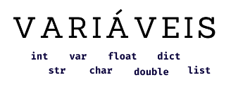

Fase 4 - Manipulação de Variáveis
Nessa fase há um trecho de código JavaScript que precisa ser corrigido, você deve preencher os preços corretos das pizzas nas caixas de entrada ao lado de cada variável e em baixo deverá colocar as somas das variáveis.